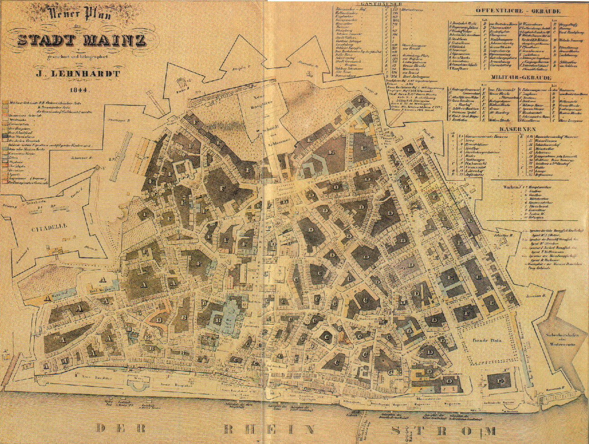
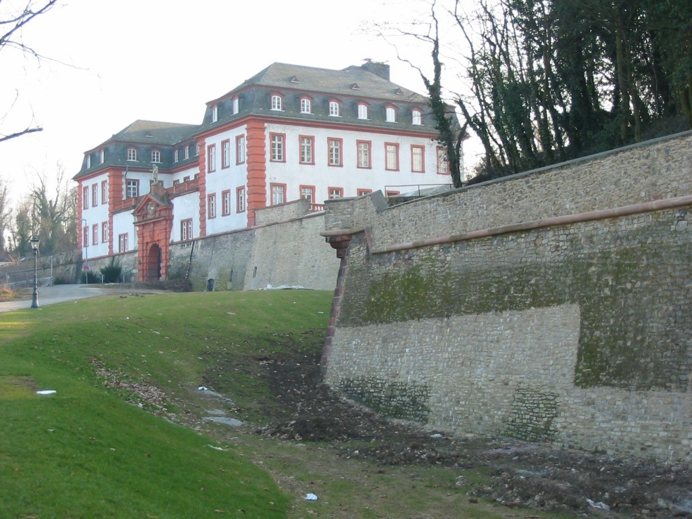
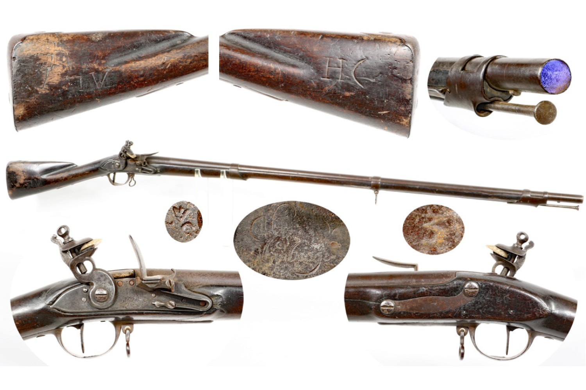
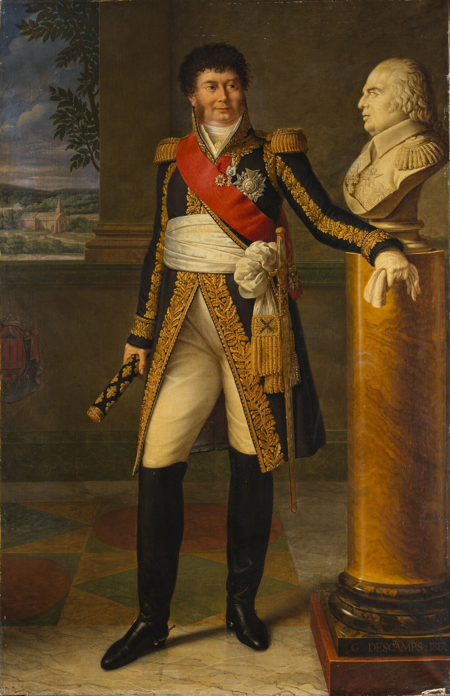
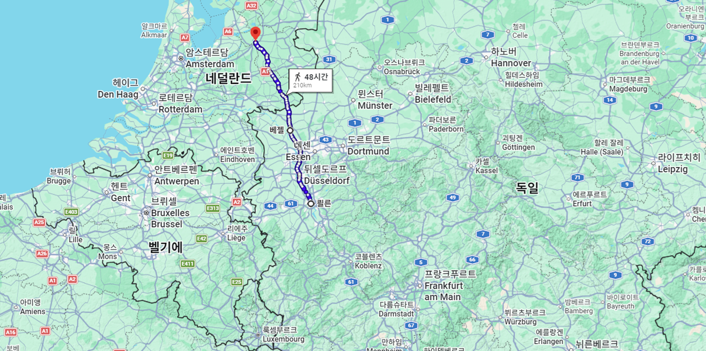
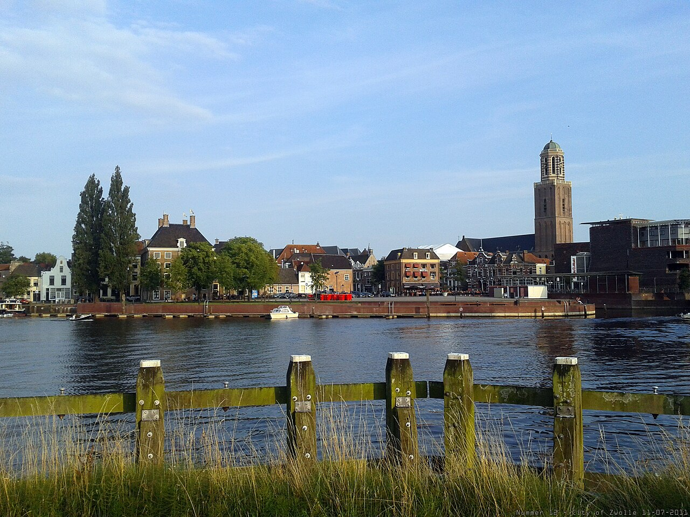
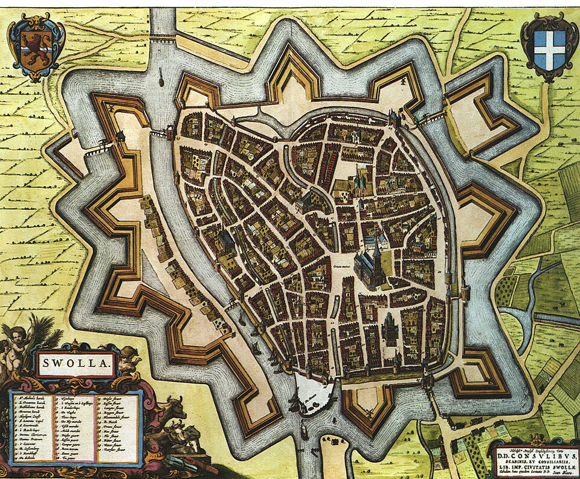
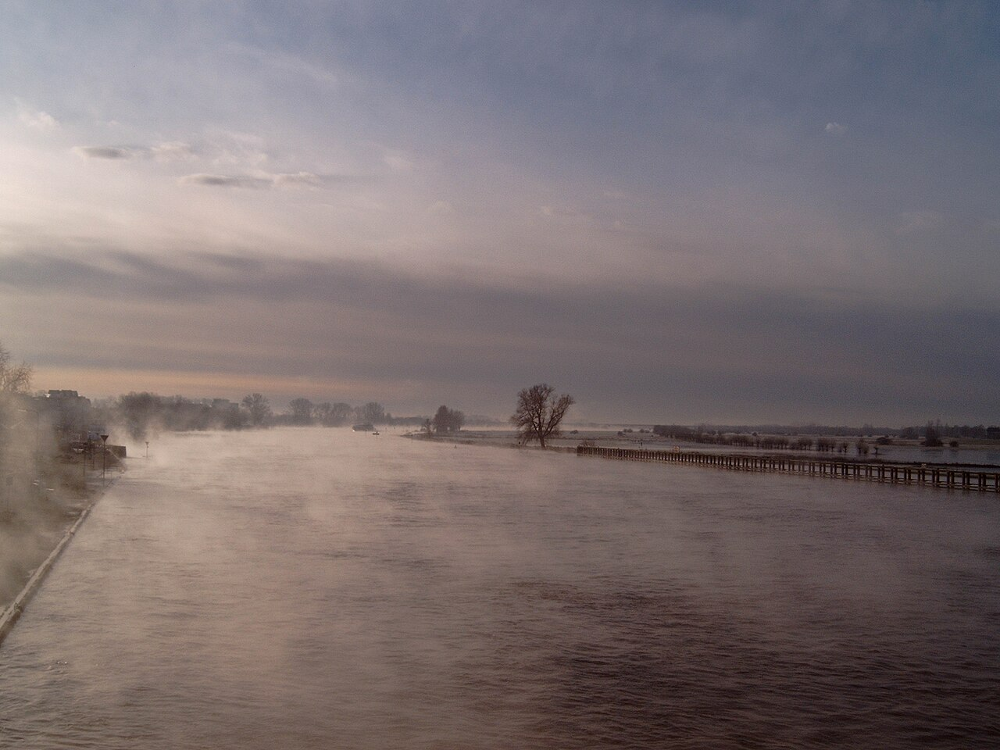
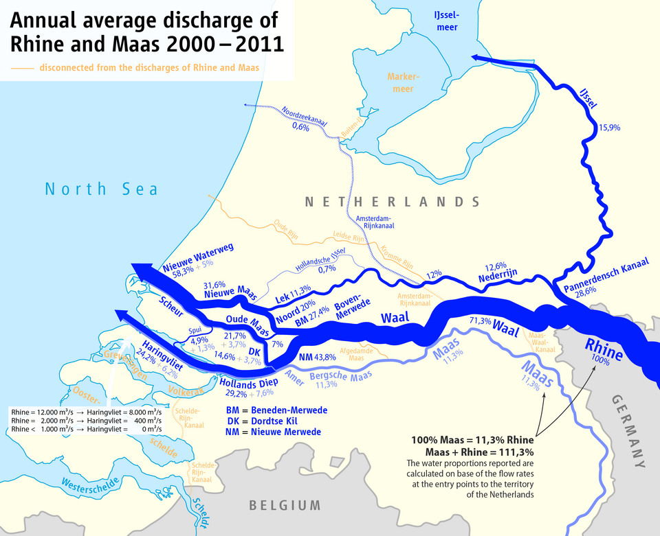
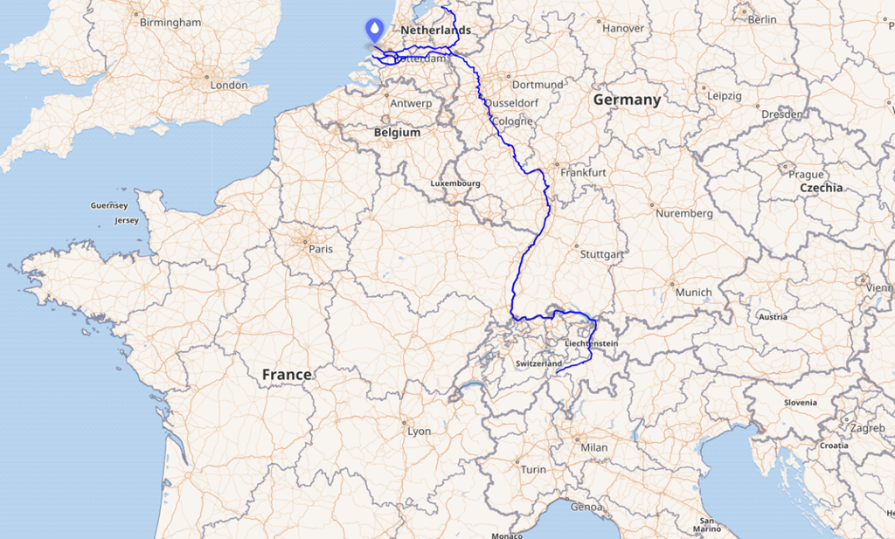

나폴레옹의 겨울 (1) - 라인 강변에 서서
게시: 2026-06-22T06:20:30+09:00
10월 30~31일 하나우 전투에서 승리한 나폴레옹은 프랑크푸르트를 거쳐 11월 2일, 드디어 라인강을 건너 프랑스 땅, 즉 마인츠(Mainz, 프랑스어로는 Mayence)에 입성합니다. 러시아에서 거지꼴로 돌아온지 불과 4달 만에, 무에서 유를 창조하다시피 20만에 가까운 새로운 대군을 편성하여 마인츠에서 라인강을 건너 독일로 진격한 것이 바로 엊그제 같았는데, 불과 7달 만에 그는 다시 거지꼴이 되어 마인츠로 돌아온 것입니다. 이번에 그의 뒤를 따라 마인츠로 들어온 그랑다르메의 전체 병력은 불과 6만에 불과했습니다. 그러나 그 중 부대 형태를 유지하고 있는 것은 불과 3만 정도였고, 나머지는 아무런 지휘 체계도 없는 낙오병들로서, 무기를 쥐고 있는 자들도 거의 없었습니다. 어떻게든 무장시키고 부대로 재편성화하기 전에는 이들은 병력으로서는 아무 쓸모가 없었습니다. 하지만 거의 3만에 달하는 낙오병들을 재무장시킬 충분한 머스켓 소총과 탄약 등이 마인츠에 있었을까요? 마인츠는 프랑스 국경의 제1급 요새 도시로서, 성벽은 물론 포대도 상당한 수준으로 관리되고 있었습니다. 따라서 고정식 요새포들과 그를 위한 포탄 및 화약은 충분한 편이었습니다. 그러나 머스켓 소총은 다른 이야기였습니다. 그 해 봄, 러시아에서 돌아온 나폴레옹이 정말 순식간에 20만에 가까운 신규 그랑다르메를 만들어낸 것은 유럽 제1의 강대국 프랑스의 저력을 보여준 것이긴 합니다만, 프랑스라고 해도 그 무기고에 밑창이 없는 것은 아니었습니다. 당시 나폴레옹은 프랑스 전역에서 사람은 물론 대포와 머스켓, 화약과 말, 수레 등을 그야말로 박박 긁어모아야 했습니다. 그리고 그때 마인츠에 비축되어 있던 머스켓도 상당량이 인출되었던 것입니다. 그 결과, 머스켓은 충분치 않았습니다. 총도 없는 병사들을 싸우게 할 수는 없었습니다.

(1844년 마인츠의 지도입니다. 보방식 성곽의 모습이 잘 보입니다.)

(지금도 남아있는 마인츠 요새의 일부 성곽 모습입니다.) 나폴레옹은 이런 문제들을 해결하기 위해, 마인츠로 입성하자마자 정말 미친 듯이 서류작업에 매달렸습니다. 이번에 마인츠로 입성한 병사들의 인원수와 무기 및 탄약 상황, 부대별로 부족한 장교와 부사관의 현황, 어떤 부대를 해체하고 어떤 부대를 새로 만들 것인지, 그리고 그런 빈자리에 누굴 승진시켜서 채워넣을지 등등은 모두 그가 보고를 받고 파악한 뒤 승인하고 결정해야 하는 것이었습니다. 뿐만 아니라 파리의 정부 요인들에게도 무수하게 많은 편지를 보내 다독거리고 지시를 내려야 했습니다. 가령 11월 2일 마인츠에서 나폴레옹이 파리의 대법관 캉바세레스에게 보낸 편지 내용은 아래와 같았습니다. "내 사촌, 자네의 10월 29일 자 편지를 받았네. 나는 마인츠에 도착했네. 나는 이곳에서 군대를 결집하고, 휴식을 주며, 재편성하기 위해 노력 중이네. 전쟁부 장관(클라크)에게 소총(fusils)이 부족하다는 공포 분위기를 사방에 퍼뜨리지 말라고 전하게. 프랑스에는 소총이 많이 있네. 사실 많은 소총이 규격에 맞지 않거나 외국산 규격이기는 하지만, 국민방위군(gardes nationales)을 무장시키는 데는 충분히 쓸 수 있으니 소총이 없다고 말해서는 안 되네." 저기서 '나는 마인츠에서 군대를 집결시키고 휴식시키고 재편성하려고 노력 중' (Je tâche d’y rallier, d’y reposer et d’y réorganiser l’armée) 이라는 말은, 그의 군대가 흩어져 있고 지치고 병들었으며 부대조직이 와해되어 있다는 뜻이었습니다. 또 프랑스에 총이 많으며 국민방위군을 무장시키는데는 충분하다는 소리는 정규군을 무장시킬 총은 없는 것이 사실이라는 소리였고요. 실제로 마인츠의 무기고에도 머스켓 소총이 꽤 있었습니다. 그러나 그건 여태까지 패배시킨 적군, 그러니까 오스트리아군이나 프로이센군 등으로부터 노획한 것들로서, 마치 우리나라 예비군에서도 현역에서는 쓰지 않는 M-16 등의 한물 간 소총을 쓰는 것처럼 예비용으로 보관하고 있던 것에 불과했습니다. 그런 소총들은 낡고 녹슨데다 스프링이나 부싯돌 등 일부 부품이 파손된 것도 있는데다 프랑스군의 표준 머스켓인 샤를빌(Charleville) 머스켓과는 탄약 호환이 되지 않는 것들이 많았습니다.

(1766년식 샤를빌 머스켓입니다. 당시 샤를빌 머스켓은 17.5 mm(0.69인치)의 총열 구경을 가지고 있었는데, 당시 영국군의 브라운 베스(Brown Bess) 머스켓은 19.3 mm (약 0.76인치), 프로이센의 포츠담(Potsdam) 머스켓은 18.0 mm ~ 20.0 mm (약 0.71~0.78인치)로서 샤를빌보다 구경이 약간 큰 편이었습니다. 어차피 당시 탄환은 그다지 정밀하지 않아 실제로는 저 구경보다는 더 작았지만, 그래도 외국제 머스켓에 샤를빌 탄환을 넣으면 문제가 있었지요.) 나폴레옹은 마인츠에 보관된 그런 낡은 머스켓들을 후방으로 보내고 대신 후방 수비대가 보유하고 있던 머스켓을 가져오게 하는 등의 조치를 내려 무기를 끌어모으려 애썼습니다. 같은 날 전쟁부 장관 클라크(Henri Jacques Guillaume Clarke)에게 보낸 편지 내용은 이랬습니다. "펠트르(Feltre) 공작, 귀하가 부왕(이탈리아 부왕 외젠 드 보아르네)이 요청한 6,000정의 소총을 즉시 보냈을 것으로 생각하오. 뷔르템베르크와 라인 동맹의 다른 국가들에 아직 인도되어야 할 무기 공급이 있다면 모두 중단하시오." 당시 외젠은 북부 이탈리아의 아디제(Adige) 강 방면에서 오스트리아군의 힐러(Johann von Hiller)와 싸우고 있었는데, 외젠의 이탈리아 왕국도 군수품이 부족하여 신병들은 군복이나 탄약낭도 없이 농장에서 입던 옷을 입고 싸우던 형편이었습니다. 위 편지 내용이 암시하는 것은 '혹시 외젠이 보내달라고 긴급히 요청한 소총 6,000정을 아직 안 보냈다면 보내지 말고 나에게 달라'는 것이었습니다.

(전쟁성 장관 클라크는 이름에서 알 수 있듯이 정통 프랑스인이 아니라, 그의 할아버지 때 프랑스로 망명해온 아일랜드 집안 출신입니다. 17세기 후반, 영국의 개신교 국왕인 윌리엄 3세와 가톨릭 국왕인 제임스 2세 사이에 왕위 찬탈을 둘러싼 '윌리엄 전쟁'이 벌어졌을 때, 아일랜드 가톨릭교도들은 제임스 2세 편에 서서 싸웠으나 결국 패배했고, 그 결과 수만 명의 아일랜드 귀족들과 군인들이 유럽의 카톨릭 국가들로 망명했었습니다. 클라크는 나폴레옹이 신뢰할 만한 모든 조건을 갖춘 인물, 즉 귀족 출신에 행정적으로 유능하고 일 중독자인데다 교양 있는 사람이었으므로 나폴레옹이 전적으로 신뢰했습니다. 그러나 란이나 뒤록처럼 나폴레옹과 우정을 나눈 사이는 아니었는지라, 백일천하 때 클라크는 냉정하게 판단하고는 부르봉 왕가를 따라갔습니다.) 마인츠에서의 이런 군수품 조달과 부대 재편성 외에도 나폴레옹은 할 일이 너무나 많았습니다. 프랑스는 큰 나라였고 라인강은 길었으며, 연합군이 마인츠로만 몰려들 리가 없었습니다. 그는 막도날에게는 아예 라인강을 건너지도 말고 제11군단의 지휘권을 샤르팡티에(Charpentier)에게 넘기고 홀몸으로 즉각 쾰른으로 이동하여, 현지에 이미 주둔한 국경 수비대을 활용하여 모젤(Moselle)강에서부터 네덜란드 즈볼러(Zwolle)에 이르는 라인강 국경의 방어를 책임지게 했습니다. 그러나 어차피 현지의 수비대도 충분한 병력은 아니었으므로 막도날에게도 추가 병력을 지원해주어야 했는데, 나폴레옹은 베스트팔렌 국왕 놀음을 하다 도망쳐온 제롬이 끌고 온 2~3천의 병력이 쾰른에 도착했으니 그들도 막도날이 지휘하도록 했습니다.

(막도날이 책임져야 했던 쾰른에서 베젤(Wesel)을 거쳐 즈볼러(Zwolle)로 이어지는 선입니다. 자세히 보면 베젤은 라인강 우안, 그러니까 동쪽에 위치한 도시라서 방어가 어려웠고, 즈볼러는 아예 라인강에서 훨씬 동쪽에 위치한 도시입니다. 그러니 방어가 어렵지 않았을까요? 당연히 어려웠습니다. 그런데 별 상관이 없는 것이, 저 방어선은 무려 210km에 걸친 긴 것으로서 어차피 막도날이 거느릴 소수 병력으로 절대 방어가 불가능했습니다.)

(즈볼러는 지금도 인구 12만의 작은 도시로서, 예쁘고 아담하긴 하지만 엄청나게 중요한 전략적 위치를 가지고 있다고 말하긴 어렵습니다.)

(그런데 나폴레옹은 왜 즈볼러(Zwolle)를 콕 집어서 방어거점으로 지정했을까요? 즈볼러는 라인강에서 갈라져 나온 분류(分流, Distributary)인 에이셜(IJssel)을 끼고 만들어진 한자 동맹의 요새 도시였기 때문입니다. 왜 하필 여기에 요새를 건설했을까요? 원래 네덜란드는 저지대로서 홍수와 범람이 잦은 곳이었습니다. 그런데 즈볼러가 위치한 살란트(Salland) 지역은 비교적 견고하고 높은 지형이라서 홍수 피해가 적고 군대 주둔에 용이했기 때문이었습니다.)

(쥐트펜(Zutphen) 인근에서의 에이셜(IJssel) 강의 모습입니다.)

(라인강은 어느 지점에서 북해로 흘러들어갈까요? 큰 강이니까 강하구도 엄청나게 넓겠지요? 실은 라인강은 네덜란드에 들어서서는 발강(Waal), 네더레인강(Nederrijn), 에이셜강(IJssel), 레크강(Lek), 메르베더강(Merwede) 등의 여러 분류(分流)로 갈라집니다. 그러니까 라인강은 직접적으로는 바다에 닿아 있지 않은 셈입니다. 어떻게 보면 네덜란드 전체가 라인-마스-스헬더 삼각주(Rhine–Meuse–Scheldt Delta)로 되어 있다고도 할 수 있습니다.)

(라인강의 어원은 고대 켈트어 Rēnos인데, 그 뜻은 그냥 '흐르는 물'이라는 뜻이라고 합니다. 라인강이 그 일대에서 가장 크고 긴 강이기 때문에 그런 이름이 붙었나 봅니다. 우리가 흔히 쓰는 Rhine(라인)은 영어이고, 독일어로는 Rhein(라인), 프랑스어로는 Rhin(랭), 이탈리아어로는 Reno(레노)입니다.) 가장 서글픈 부분은 나폴레옹이 막도날에게 지시한 첫 임무는 모든 나룻배와 보트를 수거하여 적이 강을 건너지 못하게 하라는 것이었다는 부분입니다. 이건 나폴레옹이 과거 제1차 대불동맹전쟁 때 이탈리아에서 오스트리아군과 싸울 때, 오스트리아군이 아디제 강에서 나폴레옹을 막기 위해 쓰던 방어책이었기 때문입니다. 물론 그때 나폴레옹은 어떻게든 보트를 찾아내어 적의 감시가 소홀한 곳에서 아디제 강을 건넜습니다. 그런 소극적인 방법으로는 훨씬 더 긴 라인강을 절대 지킬 수 없다는 것을 나폴레옹도 잘 알고 있었을 텐데, 따로 방법이 없었던 것입니다. 그 외에도 할 일은 많았습니다. 빅토르에게는 제2군단을 이끌고 라인강 상류인 오펜하임(Oppenheim)으로 이동하게 했고, 마르몽에게는 제6군단을 이끌고 라인강 너머 획스트(Hoechst)에 전초 방어진지를 구축하게 했습니다. 라이프치히에서 후퇴할 때부터 이미 번지기 시작했던 티푸스가 마인츠에 들어와서는 더 창궐하고 있었습니다. 그에 대한 보건조치도 마련해야 했고 (당시엔 티푸스의 원인이 이라는 것을 몰랐기에 사실 별 뾰족한 수가 없었습니다), 프랑스 전역에서 새로 징병할 신병들과 그들을 이용하여 편성할 새로운 부대 편성안도 작성해야 했습니다. 마인츠의 수비 사령관으로는 모랑(Charles Antoine Morand)을 임명하고 식량과 탄약의 비축, 요새 성곽 등의 정비도 신경써야 했습니다. 하지만 가장 중요한 곳은 파리였습니다. 프랑스는 모든 것이 파리에서 결정되는 나라였고, 마인츠에서 나폴레옹이 아무리 세밀한 징병안과 부대 편성안을 작성하여 파리에 보낸다고 해도, 나폴레옹이 파리에서 주요 공직자들과 정계 인사들을 만나 그들의 눈과 귀에 자신의 건재함을 보여주지 않으면 아무 소용이 없었습니다. 이러는 사이 시간은 순식간에 흘러 6일째가 되었습니다. 나폴레옹은 더 이상 미룰 수 없다고 판단하고는 11월 7일 새벽에 소수의 인원만 동반한 채 파리를 향해 마차를 달렸습니다. 나폴레옹이 이렇게 눈코 뜰 새 없이 바쁘게 일하는 동안, 연합군은 뭘 하고 있었을까요? 그들은 프랑크푸르트에 모여 나폴레옹이 전혀 예상하지 못한 계획을 짜고 있었습니다. Source : The Life of Napoleon Bonaparte, by William Milligan Sloane Napoleon and the Struggle for Germany, by Leggiere, Michael V With Napoleon's Guns by Colonel Jean-Nicolas-Auguste Noël https://napoleon-histoire.com/correspondance-de-napoleon-novembre-1813/ https://en.wikipedia.org/wiki/Rhine https://en.wikipedia.org/wiki/Rhine%E2%80%93Meuse%E2%80%93Scheldt_Delta https://en.wikipedia.org/wiki/IJssel https://en.wikipedia.org/wiki/Henri_Jacques_Guillaume_Clarke https://en.wikipedia.org/wiki/Fortress_of_Mainz https://collegehillarsenal.com/french-m1766-charleville-musket